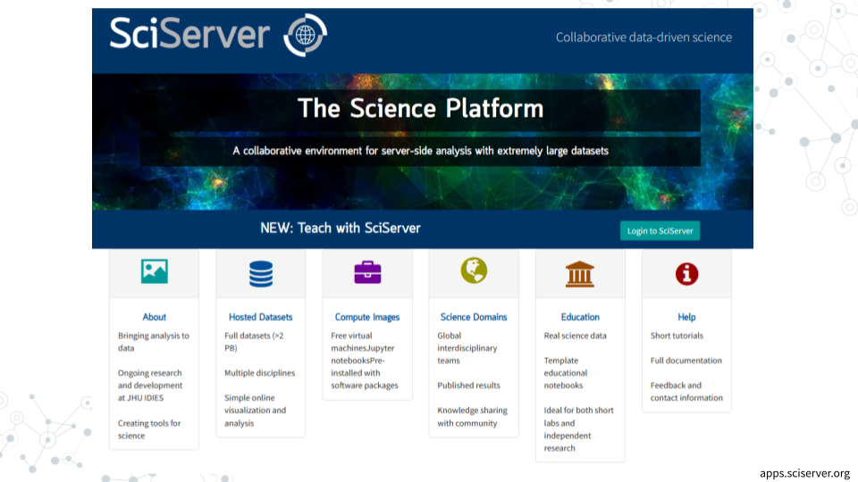
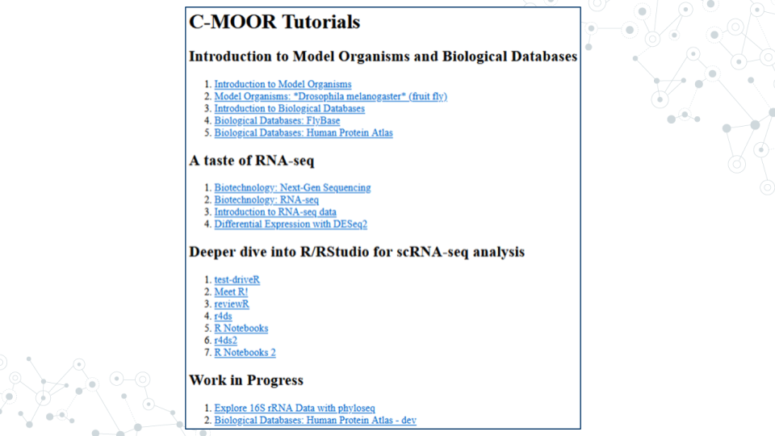
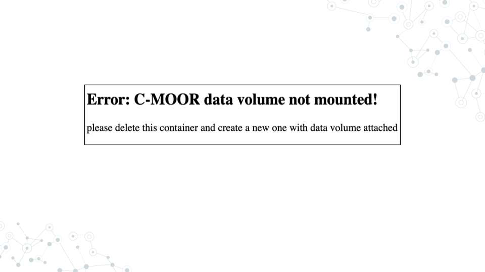
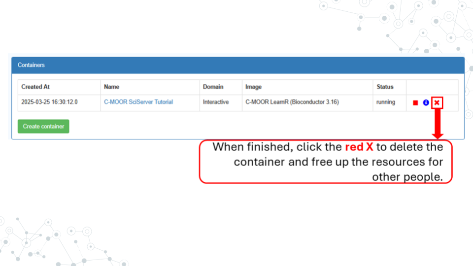

2.1 SciServer Onboarding
2.1.1 Join SciServer
2.1.1.1 Purpose
Students will create a SciServer account and be added to a SciServer by their instructor, which gives them access to the images and data needed to access learning modules and complete their research project. The steps in this section only need to be completed once.
2.1.1.2 Learning Objectives
- Create an account on SciServer
- Confirm your email address
- Share your username with your instructor
- Confirm your access to class materials on SciServer
This video (video)(slides) shows you how to create a SciServer account. You can follow along with the video, or follow the steps below.
2.1.1.3 Introduction
SciServer is an online platform for doing scientific data analysis. It is used by scientists studying astronomy, biology, oceanography, and more, and is free as long as you are using it for scientific research. Using SciServer means you do not need a fancy computer or need to install any special programs on your computer, you can just log in with your internet browser to start doing research. For this course, we have set up SciServer with customized collections of programs for RNA-seq analysis, as well as the data that we’ll be analyzing. Once you sign up for SciServer and are added to the group for this course, you will be able to access these tools and begin your data analysis journey!

2.1.1.4 Part 1 – Create an account on SciServer
- Open sciserver.org in a web browser
- It is a good idea to bookmark this page so that you can easily access it throughout the course.
- Click “Login to SciServer”
- Click “Create a new account”
- Enter a User name, Email, etc. and click “Create account”
- Note that you cannot change your username once you have made your account
2.1.1.5 Part 2 – Confirm your email address
- Important!: Click the verification link in your email inbox.
- If you do not verify your account you will get locked out and will need to contact your instructor to unlock your account.
- If you do not see an email, try checking your spam folder.
- After clicking the verification link, confirm that your username appears in the upper right hand corner.
2.1.1.7 Part 4 – Accept the invitation to join a SciServer group
This video (video)(slides) shows you how to join a SciServer group. You can follow along with the video, or follow the steps below.
- Open sciserver.org in a web browser and log in to your account.
- Click “Groups”
- On the left, you should see a list of all the groups you have joined or been invited to. Click on the name of the group for this course, then click “Accept invitation”.
- Your instructor must have your username to invite you to the group. If you do not see an invitation, contact your instructor with your SciServer username.
- Confirm that you can access course data
- On the top menu bar, click “Files”
- On the left-hand menu, click “Data Volumes”
- Confirm that you see “C-MOOR-Data”
- Confirm that you can access course computing resources
- Click “Home” in the top menu to return to the home page.
- Scroll down to the second set of boxes and click “Compute”
- Click “Create container”
- In the “Compute Image” drop-down menu, confirm that you can see “C-MOOR LearnR” and “C-MOOR R-Studio”
- Under “Data Volumes”, confirm that you can see “C-MOOR Data”
- You can close the Create Container dialog box (by clicking the “X” in the top right) once you’ve confirmed that you can see the C-MOOR content
2.1.2 Running modules on SciServer
2.1.2.1 Purpose
The purpose of this assignment is to learn how to access the modules for your course on SciServer and properly close out your session when finished.
2.1.2.2 Learning Objectives
- Start up a C-MOOR LearnR compute container
- Access a C-MOOR module
- Delete your C-MOOR LearnR compute container when finished
2.1.2.3 Introduction
Before beginning this assignment, you should have already created a SciServer account and submitted your SciServer username to your instructor. In this assignment you will learn how to set up a “compute container” on SciServer. Compute containers are how you use programs on SciServer. There are two C-MOOR compute containers on SciServer: “C-MOOR LearnR” has tutorials that will teach you how to run data analyses, and “C-MOOR R-Studio” is where you can work on your own data analysis projects. This assignment shows you how to set up the C-MOOR LearnR compute container and start up your first tutorial.
2.1.2.4 Part 1 – Start up a “C-MOOR LearnR” compute container
This video (video)(slides) shows you how to create and start up a C-MOOR LearnR compute container. You can follow along with the video, or follow the steps below.
- Open sciserver.org in a web browser and log in to your account.
- If you are already logged in, click “Home” in the top menu to return to the home page.
- Scroll down to the second set of boxes and click “Compute”
- Click “Create container”
- Give your container a name. This can be anything you like, but it’s useful if it says something about the purpose of the container so you can tell your containers apart. You could name this container “Tutorials”, since you’ll be using it to access tutorials.
- In the “Compute Image” drop-down menu, select the C-MOOR LearnR that your instructor chooses
- Under “Data Volumes”, check the box next to “C-MOOR Data”
- Click “Create”. This may take a moment.
- You should now see a new entry in your list of containers
- “Created At” should be a few moments ago.
- “Name” should be the name you chose
- “Image” should be “C-MOOR LearnR”
- Start your C-MOOR LearnR container by clicking on its name (whatever name you chose when you created it). This will open in a new tab.
- You should see a list of tutorials, organized by topic.

- If instead you see an error message, you most likely forgot to check the box next to “C-MOOR Data” when you created the container.

- If you see something else, you may have picked the wrong “Compute Image” from the drop-down menu.
If anything goes wrong, you can always delete your container by clicking the red “X” in the last column, and create a new container.
2.1.2.5 Part 2 – Opening C-MOOR modules
- If you’re not there already, go to the SciServer compute page and start up the C-MOOR LearnR container.
- Open sciserver.org in a web browser and log in to your account.
- If you are already logged in, click “Home” in the top menu to return to the home page.
- Scroll down to the second set of boxes and click “Compute”.
- Start your C-MOOR LearnR container by clicking on its name.
- Click on the module chosen by your instructor. The tutorial will open in a new tab.
- Complete the tutorial.
2.1.2.6 Part 3 – Delete your C-MOOR LearnR compute container
Compute containers are meant to be temporary, and you can only have 3 containers total on SciServer. So it’s generally a good idea to clean up after yourself and delete your containers when you’re done using them. Also, if any updates are made to the C-MOOR LearnR container, you will need to create a new container to get the latest updates.
Deleting your container will delete your progress in a tutorial, so don’t delete the container until you have completed the tutorial and submitted any required items to your instructor.
To delete a container:
- If you’re not there already, go to the SciServer compute page.
- Open sciserver.org in a web browser and log in to your account.
- If you are already logged in, click “Home” in the top menu to return to the home page.
- Scroll down to the second set of boxes and click “Compute”.
- Find the container you want to delete.
- Click on the red “X” in the last column.
